El cabo de Peñas es la zona de referencia en el buceo en Asturias, es una zona expuesta a fuertes corrientes y colmada de farallones de roca que está llena de restos de antiguos naufragios y mucha vida marina. Pocos días se pueden bucear en Peñas de la forma que pudimos el día que grabamos este vídeo, todo un lujo!
Como siempre, esperamos que os guste!
